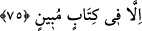

RABBİN,
İNSANLARA KARŞI
LÜTUF SÂHİBİDİR
70. (Rasûlüm!) Onların yüzünden tasalanma, kurmakta oldukları tuzaklardan
ötürü sıkıntı duyma.
71. Onlar: Eğer doğru sözlü iseniz (söyleyin bakalım) bu tehdit ne zaman
gerçekleşecek? derler.
72. De ki: Çabucak gelmesini istediğiniz şeyin (azâbın) bir kısmı herhalde
yakında başınıza gelecektir.
73. Şüphesiz Rabbin, insanlara karşı lütuf sâhibidir; fakat insanların çoğu
şükretmezler.
74. Rabbin elbette onların kalplerinin gizlediklerini de, açığa vurduklarını da bilir.
75. Gökte ve yerde göze görünmeyen hiçbir şey yoktur ki, apaçık bir kitapta
(levhi mahfuzda) bulunmasın.
“(Rasûlüm!) Onların” yalanlamaları ve ısrarları “yüzünden tasalanma,” üzülme.
Çünkü onlar bunun için yaratılmışlardır.
Bu, üzülme fiilini yasaklamak değildir. Çünkü üzülmek insanın kendi irâdesinde
değildir. Fakat bu hakîkatte, üzülmeye sebep olan ve ona götüren şeyleri işlemeyi terk
etmek anlamında bir yasaklamadır.
“
” yerin sert oluşuna ve gamdan dolayı insanın nefsinde meydana gelen
sertliğe denir. Zıddı, sevinç ve ferahtır.
“Kurmakta oldukları tuzaklardan” onların tuzaklarından, hilelerinden, seni helâk
etmek ve insanları senin dîninden men etmek için kurdukları planlardan “ötürü sıkıntı
duyma.” darlık çekme. Çünkü “kötü tuzak, ancak sâhibine dolanır.” (Fâtır, 35/43)
“Allah seni insanlardan koruyacaktır.” (el-Mâide, 5/67) Dinini üstün kılacaktır.
“
” genişliğin zıddıdır. Fakirlik, gam ve benzerleri için kullanılır.